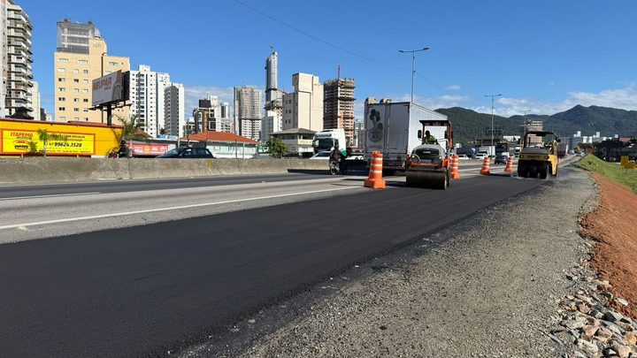
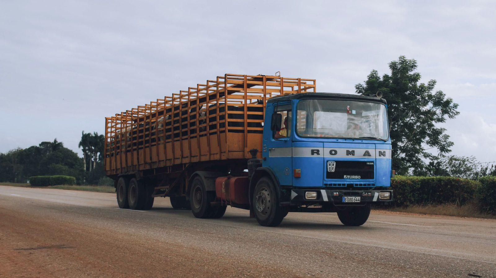

Itapema · InfraestruturaA alça da BR-101 em Itapema ganhou mais 90 dias de contrato quatro dias depois do anúncio de reta final, e o novo prazo vai até 19 de dezembro
A outra obra de estrada que muda o trânsito pesado da região.
A ponte sobre o Rio Santa Luzia fica bem em cima da divisa, então cada prefeitura teve de assinar o decreto dela. Saíram os dois no mesmo 11 de setembro: o nº 4.564 em Porto Belo e o nº 3.162 em Tijucas. Nós abrimos os dois no Diário Oficial dos Municípios. Eles proíbem na ponte o veículo com Peso Bruto Total acima de 12 toneladas e também o veículo com mais de dois eixos, mesmo rodando vazio. O motivo está escrito lá dentro: o Laudo Técnico aponta comprometimento da integridade da estrutura e classifica a ponte em Nível 1, Estado Crítico. O pedido veio num ofício assinado em conjunto pelas Defesas Civis das duas cidades.
Em 30 segundos · Modo de Leitura, formato original Santa Informa
Tem uma ponte sobre o Rio Santa Luzia.
Ela fica na divisa de duas cidades.
Porto Belo de um lado, Tijucas do outro.
Desde 11 de setembro ela tem trava.
Não passa acima de 12 toneladas.
E não passa com mais de dois eixos.
Mesmo vazio, não passa.
Carro e moto seguem passando.
O motivo está no laudo técnico.
Ele fala em integridade comprometida.
E classifica em Nível 1.
Que o laudo chama de Estado Crítico.
Cada prefeitura assinou um decreto.
Nº 4.564 em Porto Belo.
Nº 3.162 em Tijucas.
Os dois no mesmo dia.
Nós juntamos os dois textos.
São iguais artigo por artigo.
O pedido foi das Defesas Civis.
Num ofício conjunto, o nº 072/2026.
Porto Belo avisou o público em 16.
Cinco dias depois de começar a valer.
O aviso não usa Estado Crítico.
Tijucas ainda não publicou aviso.
Nenhum decreto indica o desvio.
Nenhum fixa multa.
A trava pode ser revista.
Só depois de nova avaliação técnica.
InfraestruturaPublicada em Redação Santa Informa

A ponte sobre o Rio Santa Luzia, na divisa entre Porto Belo e Tijucas, está proibida para veículo pesado desde 11 de setembro. Não passa quem tem Peso Bruto Total acima de 12 toneladas, e também não passa quem tem mais de dois eixos, mesmo rodando vazio. O motivo está escrito no decreto, com todas as letras: o Laudo Técnico da ponte aponta comprometimento da integridade da estrutura e a classifica em Nível 1, Estado Crítico.
Como a ponte fica bem na divisa, cada prefeitura precisou assinar o seu. Porto Belo publicou o Decreto nº 4.564 e Tijucas publicou o Decreto nº 3.162, os dois em 11 de setembro, os dois no Diário Oficial dos Municípios da mesma data. Nós abrimos os dois. O texto é igual artigo por artigo, e o de Tijucas cita o de Porto Belo logo na abertura, registrando que as duas cidades decidiram com base nas mesmas informações. Os dois valem desde a publicação e os dois dizem que a restrição pode ser revista depois de nova avaliação técnica. Assinam os prefeitos Joel Orlando Lucinda, em Porto Belo, e Maickon Campos Sgrott, em Tijucas.
Porto Belo contou a restrição na página de notícias nesta quarta, 16 de setembro, cinco dias depois de ela começar a valer. O aviso fala em estudos técnicos e em condições identificadas num trabalho preventivo de monitoramento. A expressão Estado Crítico, que está no decreto assinado pelo prefeito, não aparece no texto do aviso. Até o fechamento desta matéria, o site da Prefeitura de Tijucas não trazia notícia sobre o assunto, e a mais recente listada ali era de 10 de setembro.
A recomendação não partiu de uma prefeitura sozinha. Os dois decretos citam o Ofício nº 072/2026, expedido em conjunto pelas Defesas Civis de Porto Belo e de Tijucas, que pede a adoção imediata de medida preventiva de restrição do tráfego pesado na ponte. Os dois textos ainda autorizam os órgãos municipais a agir de forma coordenada com os da cidade vizinha, o que é o jeito de fazer a trava valer dos dois lados do rio.
Dois eixos é um limite baixo. Caminhão de três eixos, caminhão-pipa, caminhão de mudança e carreta ficam fora da ponte mesmo vazios, porque a proibição por número de eixos vale sozinha, sem depender do peso. Carro de passeio, moto e utilitário leve continuam passando. Nenhum dos dois decretos indica por onde o veículo pesado deve desviar, e nenhum deles fixa multa ou nomeia quem fiscaliza.
O resumo de 30 segundos está no topo e a versão completa é o texto acima. Aqui ficam as três leituras da casa sobre o mesmo assunto.
Clara, a otimista
O melhor desta história é que ninguém esperou acontecer nada. O laudo apontou o problema, as Defesas Civis das duas cidades escreveram um ofício juntas e a trava entrou no dia seguinte. Ponte de divisa costuma ser terra de ninguém, e esta teve dois donos ao mesmo tempo.
Também gosto de ver duas prefeituras assinando no mesmo dia, com o mesmo texto, uma citando a outra. Isso é o monitoramento preventivo funcionando do jeito que foi desenhado para funcionar, e custou uma folha de papel.
Seu Prudêncio, o criterioso
Merece atenção o laudo não ter vindo junto. Os decretos usam a expressão Nível 1, Estado Crítico, que é conclusão de engenharia, e quem lê só o decreto não tem como saber o que essa classificação mede nem quando a vistoria foi feita. O documento já embasou dois atos oficiais, então já é público por natureza.
Vale acompanhar também o desvio. A ponte liga duas cidades e a proibição pega de três eixos para cima, o que inclui caminhão de obra, de mudança e de entrega. Sem rota indicada, quem dirige decide sozinho, e decisão tomada no volante costuma sair pela estrada mais estreita.
Uma sugestão útil: publicar o laudo e um croqui simples do desvio na página das duas prefeituras, e repetir a placa nos dois acessos da ponte. Não custa obra nenhuma e resolve a dúvida de quem chega de fora.
Dito isso, a decisão em si está certa. Restringir antes do problema aparecer é exatamente o que se espera de quem recebe um laudo assim, e fazer isso de forma coordenada entre dois municípios é melhor ainda, porque evita a trava valer de um lado só.
Caco, o sarcástico
A ponte está em Estado Crítico e eu só descobri porque leio Diário Oficial por esporte. Recomendo a modalidade, tem reviravolta.
Adorei também a parte em que a proibição vale desde o dia 11 e o aviso saiu no dia 16. Cinco dias de suspense, gênero raro no serviço público.
Mas olha, duas prefeituras diferentes acharem o mesmo problema, escreverem o mesmo decreto e assinarem no mesmo dia é um alinhamento que muita empresa privada não consegue. Tá tarde o aviso, mas a ponte está travada, e é isso que importa.
Fontes: os dois decretos foram lidos na íntegra no Diário Oficial dos Municípios de Santa Catarina. O Decreto nº 4.564, de 11 de setembro de 2026, da Prefeitura de Porto Belo, e o Decreto nº 3.162, de 11 de setembro de 2026, da Prefeitura de Tijucas, trazem os mesmos considerandos, a mesma citação ao Laudo Técnico com a classificação Nível 1, Estado Crítico, a mesma menção ao Ofício nº 072/2026 das Defesas Civis e a mesma redação nos quatro artigos. O aviso ao público está na notícia Porto Belo restringe tráfego de veículos pesados na ponte sobre o Rio Santa Luzia, publicada pela Prefeitura de Porto Belo em 16 de setembro de 2026. A ausência de notícia sobre o assunto no site da Prefeitura de Tijucas foi conferida por nós na página de notícias, no fechamento desta matéria. A comparação entre os dois decretos, a contagem dos artigos e a conta dos cinco dias entre a vigência e o aviso são leituras nossas sobre esses documentos.

Itapema · InfraestruturaA outra obra de estrada que muda o trânsito pesado da região.
 Porto Belo · Poder Público
Porto Belo · Poder PúblicoQuanto dinheiro Porto Belo tem para obra e manutenção no ano que vem.
 Itapema · Economia
Itapema · EconomiaA mesma Defesa Civil que assinou o ofício da ponte monitora a chuva por ali.